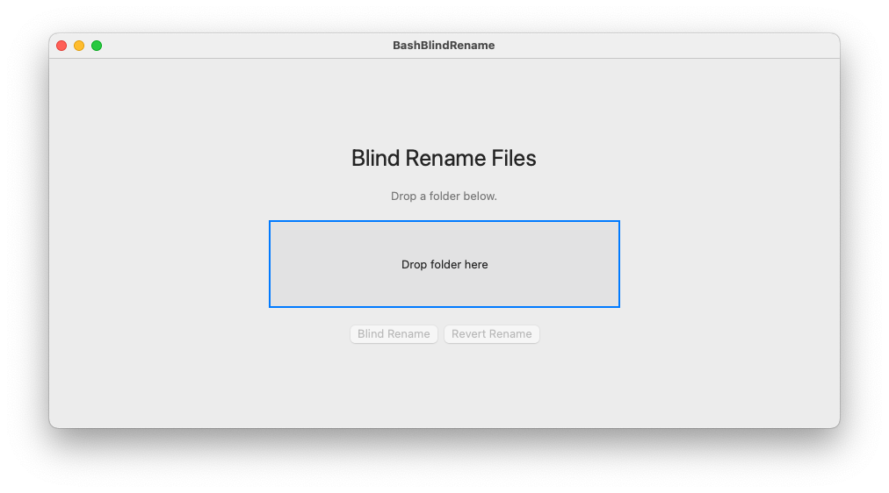

Blind Rename Files
Obfuscate filenames for unbiased analysis — macOS App & Bash Scripts


A macOS app and Bash scripts to blind-rename files in a folder for unbiased analysis. Original filenames are saved in a dictionary so they can be restored at any time.
What it does
Each file in a folder is renamed to a 20-character uppercase hash derived from its original filename. A name_dictionary.csv mapping is saved alongside the files. Running the revert restores all original names and archives the dictionary.
Files created in the folder:
| File | Purpose |
|---|---|
name_dictionary.csv |
Maps original names to obfuscated names |
Analysis_file.csv |
List of obfuscated names only, for use during blind analysis |
name_dictionary_DEPRECATED.csv |
Renamed from dictionary after a successful revert |
Subfolders are never touched.
macOS App

Download BashBlindRename.app from the releases page.
Requires macOS 12 or later. No installation — double-click and run.
- Open the app.
- Drag and drop your folder onto the drop zone.
- Click Blind Rename to obfuscate filenames.
- Click Revert Rename to restore original names.
Bash Scripts
Requirements
- Bash (macOS or Linux)
shasum— pre-installed on macOS and most Linux systems
Setup
chmod +x bash_blind_rename.sh revert_rename.shBlind rename a folder
./bash_blind_rename.sh path/to/folderRevert to original names
./revert_rename.sh path/to/folderExample
Starting folder:
temp/
foo_1.txt
foo_2.txt
foo_3.txt
subfolder/
bar_1.txtAfter ./bash_blind_rename.sh temp/:
temp/
007937B3F4F4D9F58B7D.txt
3C27A89C60DE090DE1F6.txt
760A83AE04023DD099FC.txt
name_dictionary.csv
Analysis_file.csv
subfolder/
bar_1.txtsubfolder/ and its contents are untouched.
name_dictionary.csv:
Oldname,Newname
foo_1.txt,007937B3F4F4D9F58B7D.txt
foo_2.txt,3C27A89C60DE090DE1F6.txt
foo_3.txt,760A83AE04023DD099FC.txtAfter ./revert_rename.sh temp/:
temp/
foo_1.txt
foo_2.txt
foo_3.txt
name_dictionary_DEPRECATED.csv
subfolder/
bar_1.txtSafety rules
- Will not run if
name_dictionary.csvorAnalysis_file.csvalready exist in the folder. - Will not run if
name_dictionary_DEPRECATED.csvexists — delete it first to re-run. - Does not run as root/superuser.
- Does not recurse into subfolders.
License
See LICENSE.